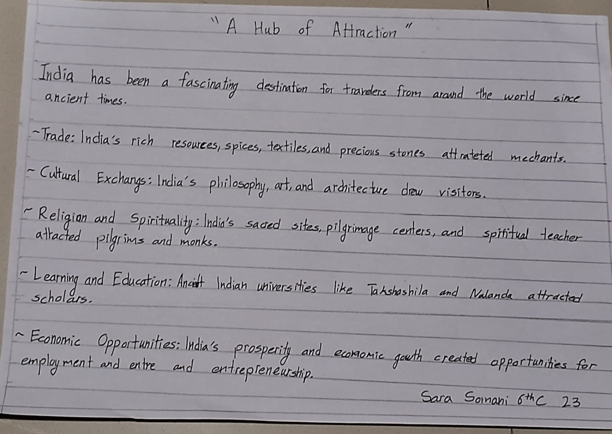

SST Page

SST Topic Description:
SST Topic Description:
Welcome To SST Page
|  |
| SST Page | |
||
|---|---|---|---|
SST Topic Description: |
Research and explain why people travelled to India from various parts of the world in ancient times. 1. Explain at least four orfive motivations behind traveling to India in ancient times. 2. Use the following subjectsto present your project: History: Highlight the key reasonsfortravel (e.g., trade, culture, religion, learning). Geography: Describe the routes used to reach India and its favorable geographical features.. | SST | |
| SST Page | |
SST Topic Description: |
SST |